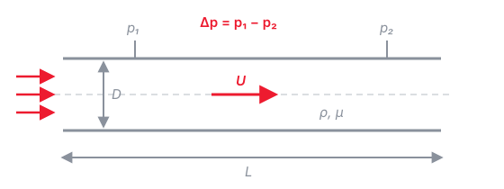

Tutorial 0: Prerequisites
What you should already know
This tutorial is a checklist, not a lecture. Everything here should be familiar from your fluid mechanics and math courses — we will briefly repeat some of it inside later exercises, but not re-teach it. Work through the self-checks at the end of each section; if one feels hard, review that topic before Tutorial 1 (references at the bottom).
1 Basic tensor algebra
1.1 What is a tensor?
A tensor is a physical quantity that exists independently of the coordinate system used to describe it — only its components change when the coordinate axes are rotated, and they do so in a well-defined way. Tensors are classified by their order (or rank), which is simply the number of indices needed to identify one component:
- Order 0 — scalar (1 component): temperature \(T\), pressure \(p\), density \(\rho\).
- Order 1 — vector (3 components): velocity \(u_i\), i.e. \((u_1, u_2, u_3)\).
- Order 2 (9 components): stress \(\sigma_{ij}\), velocity gradient \(\partial u_i / \partial x_j\).
A second-order tensor is more than a matrix of numbers: it is a linear map between vectors. The classic example is the Cauchy stress tensor, which maps the unit normal \(n_j\) of a surface to the traction (force per area) \(t_i\) acting on it:
\[ t_i = \sigma_{ij}\, n_j \tag{1}\]
We write tensors either in symbolic (bold) notation (\(\mathbf{u}\), \(\boldsymbol{\sigma}\)) or in index notation (\(u_i\), \(\sigma_{ij}\)); Section 3 explains the index rules in detail.
1.2 Elementary operations
The operations you should recognize (in both notations):
\[ \mathbf{a} \cdot \mathbf{b} = a_i b_i, \qquad (\mathbf{A}\mathbf{b})_i = A_{ij} b_j, \qquad \mathbf{A} : \mathbf{B} = A_{ij} B_{ij} \tag{2}\]
i.e. the dot product (two vectors → scalar), the tensor–vector product (→ vector, as in Eq. 1), and the double contraction (two tensors → scalar, used later for the dissipation rate).
1.3 Two special tensors: \(\delta_{ij}\) and \(\varepsilon_{ijk}\)
The Kronecker delta is the index form of the identity:
\[ \delta_{ij} = \begin{cases} 1 & i = j \\ 0 & i \neq j \end{cases} \tag{3}\]
Its key use is index substitution: multiplying by \(\delta_{ij}\) and summing renames an index, \(\delta_{ij}\, a_j = a_i\).
The Levi-Civita (permutation) symbol \(\varepsilon_{ijk}\) is the third-order companion of Eq. 3:
\[ \varepsilon_{ijk} = \begin{cases} +1 & (i,j,k) \text{ an even permutation of } (1,2,3)\text{: } 123,\, 231,\, 312 \\ -1 & (i,j,k) \text{ an odd permutation: } 132,\, 213,\, 321 \\ 0 & \text{any index repeated} \end{cases} \tag{4}\]
It encodes cross products and hence rotation. The two expressions you will meet in this course are the cross product and the vorticity:
\[ (\mathbf{a} \times \mathbf{b})_i = \varepsilon_{ijk}\, a_j b_k, \qquad \omega_i = \varepsilon_{ijk} \frac{\partial u_k}{\partial x_j} \tag{5}\]
Finally, the \(\varepsilon\)–\(\delta\) identity connects the two symbols and is the workhorse for simplifying double cross products:
\[ \varepsilon_{ijk}\, \varepsilon_{ilm} = \delta_{jl}\, \delta_{km} - \delta_{jm}\, \delta_{kl} \tag{6}\]
1.4 Symmetric / antisymmetric decomposition
Any second-order tensor splits uniquely into a symmetric and an antisymmetric part:
\[ A_{ij} = \underbrace{\tfrac{1}{2}(A_{ij} + A_{ji})}_{\text{symmetric}} + \underbrace{\tfrac{1}{2}(A_{ij} - A_{ji})}_{\text{antisymmetric}} \tag{7}\]
Applied to the velocity gradient this defines the strain-rate tensor \(S_{ij}\) (deformation) and the rotation-rate tensor \(\Omega_{ij}\) (rigid-body rotation, related to \(\omega_i\) from Eq. 5):
\[ \frac{\partial u_i}{\partial x_j} = S_{ij} + \Omega_{ij}, \qquad S_{ij} = \frac{1}{2}\!\left(\frac{\partial u_i}{\partial x_j} + \frac{\partial u_j}{\partial x_i}\right), \qquad \Omega_{ij} = \frac{1}{2}\!\left(\frac{\partial u_i}{\partial x_j} - \frac{\partial u_j}{\partial x_i}\right) \tag{8}\]
This decomposition appears in essentially every turbulence model.
- What is \(\delta_{ii}\)? (Careful: repeated index!)
- What are \(\varepsilon_{123}\), \(\varepsilon_{321}\), and \(\varepsilon_{112}\)?
- Use Eq. 5 to show \(\mathbf{a} \times \mathbf{a} = \mathbf{0}\).
2 Continuity and Navier–Stokes
For an incompressible, Newtonian fluid with constant properties, the governing variables and their SI units are:
| Symbol | Quantity | SI units |
|---|---|---|
| \(u_i\) | velocity | \(\mathrm{m\,s^{-1}}\) |
| \(p\) | pressure | \(\mathrm{Pa} = \mathrm{kg\,m^{-1}\,s^{-2}}\) |
| \(\rho\) | density | \(\mathrm{kg\,m^{-3}}\) |
| \(\mu\) | dynamic viscosity | \(\mathrm{Pa\,s} = \mathrm{kg\,m^{-1}\,s^{-1}}\) |
| \(\nu = \mu/\rho\) | kinematic viscosity | \(\mathrm{m^2\,s^{-1}}\) |
Continuity (conservation of mass) states that the velocity field is divergence-free; every term has units \(\mathrm{s^{-1}}\):
\[ \nabla \cdot \mathbf{u} = 0 \qquad \left[\mathrm{s^{-1}}\right] \tag{9}\]
Momentum (Navier–Stokes) is Newton’s second law per unit mass; every term has units of acceleration, \(\mathrm{m\,s^{-2}}\):
\[ \underbrace{\frac{\partial \mathbf{u}}{\partial t}}_{\text{unsteady}} + \underbrace{(\mathbf{u} \cdot \nabla)\,\mathbf{u}}_{\text{convection}} = \underbrace{-\frac{1}{\rho} \nabla p}_{\text{pressure gradient}} + \underbrace{\nu \nabla^2 \mathbf{u}}_{\text{viscous diffusion}} \qquad \left[\mathrm{m\,s^{-2}}\right] \tag{10}\]
Check the units term by term: \(\partial \mathbf{u}/\partial t \sim \mathrm{(m/s)/s}\); convection \(\sim \mathrm{(m/s) \cdot (m/s)/m}\); pressure gradient \(\sim \mathrm{(Pa/m)/(kg/m^3)} = \mathrm{kg\,m^{-2}\,s^{-2} \cdot m^3\,kg^{-1}}\); viscous term \(\sim \mathrm{(m^2/s) \cdot (m/s)/m^2}\) — all \(\mathrm{m\,s^{-2}}\). ✓
Two things to remember: the convective term is the only nonlinear term — it is the reason turbulence exists and the reason the averaged equations don’t close — and pressure in incompressible flow is not a thermodynamic variable but a Lagrange multiplier that enforces Eq. 9.
(The index-notation tools for 1 and 2 are introduced in Section 3 — come back here if needed.)
- Using continuity (Eq. 9), show that the convective term can be written in conservative form: \(u_j\, \partial u_i / \partial x_j = \partial (u_i u_j) / \partial x_j\).
- Take the divergence of Eq. 10 and use continuity to show that pressure satisfies a Poisson equation, \(\frac{1}{\rho} \frac{\partial^2 p}{\partial x_i \partial x_i} = -\frac{\partial u_j}{\partial x_i} \frac{\partial u_i}{\partial x_j}\). What does this tell you about the role of pressure in incompressible flow?
- The viscous dissipation rate per unit mass is \(\varepsilon = 2 \nu S_{ij} S_{ij}\) (with \(S_{ij}\) from Eq. 8). Show that its units are \(\mathrm{m^2\,s^{-3}} = \mathrm{W\,kg^{-1}}\).
3 Index notation
We will write most turbulence equations in Cartesian index (Einstein) notation. The rules:
- A repeated (dummy) index in a term implies summation over 1–3: \(a_i b_i = a_1 b_1 + a_2 b_2 + a_3 b_3\).
- A free index (appearing once) must match in every term of an equation and denotes three equations at once.
- No index may appear more than twice in a single term.
3.1 Worked example 1: divergence of a vector
With the shorthand \(\partial/\partial x_j\), the divergence \(\nabla \cdot \mathbf{u}\) has one repeated index \(j\) — so it is a scalar, written out as:
\[ \frac{\partial u_j}{\partial x_j} = \frac{\partial u_1}{\partial x_1} + \frac{\partial u_2}{\partial x_2} + \frac{\partial u_3}{\partial x_3} \tag{11}\]
3.2 Worked example 2: tensor–vector product
\(b_i = A_{ij}\, x_j\) has free index \(i\) and dummy index \(j\): it is three equations, each a sum of three terms. The first one (\(i = 1\)) reads
\[ b_1 = A_{11} x_1 + A_{12} x_2 + A_{13} x_3, \tag{12}\]
and analogously for \(b_2\), \(b_3\) — exactly a matrix–vector product.
4 Dimensional analysis: the Reynolds number
Consider fully developed flow through a pipe (Fig. 1): we ask how the pressure drop \(\Delta p\) over a length \(L\) depends on the flow and fluid parameters.

The physical relationship is
\[ \Delta p = f(\rho,\ \mu,\ U,\ D,\ L), \tag{15}\]
with dimensions (using \(\mathrm{M}\) = mass, \(\mathrm{L}\) = length, \(\mathrm{T}\) = time):
| Variable | \(\Delta p\) | \(\rho\) | \(\mu\) | \(U\) | \(D\) | \(L\) |
|---|---|---|---|---|---|---|
| Dimensions | \(\mathrm{M\,L^{-1}\,T^{-2}}\) | \(\mathrm{M\,L^{-3}}\) | \(\mathrm{M\,L^{-1}\,T^{-1}}\) | \(\mathrm{L\,T^{-1}}\) | \(\mathrm{L}\) | \(\mathrm{L}\) |
Step 1 — count. \(n = 6\) variables, \(k = 3\) independent dimensions (\(\mathrm{M}, \mathrm{L}, \mathrm{T}\)) ⟹ the Buckingham-\(\Pi\) theorem guarantees \(n - k = 3\) independent dimensionless groups.
Step 2 — choose repeating variables. Pick \(k = 3\) variables that (i) together contain all three dimensions, (ii) are dimensionally independent of each other, and (iii) do not include the dependent variable \(\Delta p\). The standard choice is \(\rho\) (mass), \(U\) (time), \(D\) (length).
Step 3 — form the groups. Each remaining variable, multiplied by powers of the repeating ones, must come out dimensionless. For \(\mu\):
\[ \Pi_2 = \mu\, \rho^{a} U^{b} D^{c} \;\;\Rightarrow\;\; \mathrm{M}^{1+a}\ \mathrm{L}^{-1-3a+b+c}\ \mathrm{T}^{-1-b} \overset{!}{=} \mathrm{M}^0 \mathrm{L}^0 \mathrm{T}^0 \tag{16}\]
Setting each exponent to zero: \(\mathrm{M}\!: a = -1\); \(\mathrm{T}\!: b = -1\); then \(\mathrm{L}\!: c = -1\). Hence
\[ \Pi_2 = \frac{\mu}{\rho U D} \quad\Longleftrightarrow\quad \Pi_2^{-1} = \frac{\rho U D}{\mu} = \mathrm{Re}. \tag{17}\]
The same procedure applied to \(\Delta p\) and \(L\) gives the other two groups (do it yourself — self-check below):
\[ \Pi_1 = \frac{\Delta p}{\rho U^2}, \qquad \Pi_3 = \frac{L}{D}, \qquad\text{so}\qquad \frac{\Delta p}{\rho U^2} = \phi\!\left(\mathrm{Re},\ \frac{L}{D}\right) \tag{18}\]
— six dimensional variables collapse to a relation between three numbers. That is exactly why friction-factor charts (Moody diagram) work.
The physical meaning of \(\mathrm{Re}\) is the ratio of inertial to viscous effects:
\[ \mathrm{Re} = \frac{\rho U D}{\mu} = \frac{U D}{\nu} \sim \frac{\text{inertial forces}}{\text{viscous forces}} \tag{19}\]
The same conclusion follows from non-dimensionalizing Eq. 14 with \(x_i^* = x_i / D\), \(u_i^* = u_i / U\), \(t^* = tU/D\), \(p^* = p / (\rho U^2)\):
\[ \frac{\partial u_i^*}{\partial t^*} + u_j^* \frac{\partial u_i^*}{\partial x_j^*} = -\frac{\partial p^*}{\partial x_i^*} + \frac{1}{\mathrm{Re}} \frac{\partial^2 u_i^*}{\partial x_j^* \partial x_j^*} \tag{20}\]
\(\mathrm{Re}\) is the only parameter left — two incompressible flows with the same geometry and Reynolds number are dynamically similar, and the viscous term becomes small (in a subtle, near-wall-dominated way) as \(\mathrm{Re} \to \infty\). This is the starting point of the course.
- Derive \(\Pi_1\) in Eq. 18 by repeating Step 3 for \(\Delta p\).
- The pipe wall has a roughness height \(k_s\) \([\mathrm{L}]\). Which dimensionless group does it add?
- Water flows at \(U = 1\,\mathrm{m\,s^{-1}}\) through a \(D = 5\,\mathrm{cm}\) pipe (\(\nu = 10^{-6}\,\mathrm{m^2\,s^{-1}}\)). Compute \(\mathrm{Re}\). Laminar or turbulent?
5 Where to review
If any of the above is rusty: the fluid mechanics fundamentals (Section 1–Section 2) are covered in [1] (Chs. 2–4), tensor and index notation in [2] (Appendix A), and [3] remains a classic compact introduction to turbulence itself.